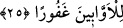

yapıyorsun.” buyurdu.[70]
25. Rabbiniz sizin kalplerinizdekini çok iyi bilir. Eğer siz iyi olursanız, şunu bilin
ki Allah, kötülükten yüz çevirerek tevbeye yönelenleri son derece bağışlayıcıdır.
“Rabbiniz sizin kalplerinizdekini” gönüllerinizdeki iyiliğe ve takvâya yönelme
kasdını “çok iyi bilir.” Sanki bu ifâde anne-babasına karşı hizmet ve saygıyı kerih ve
ağır görerek gönlünde gizleyen kimselere bir tehdittir. “Eğer siz iyi olursanız”, isyan ve
bozgunculuğu değil de iyilik ve hoşnutluğu kasdederseniz “şunu bilin ki Allah,
kötülükten
yüz
çevirerek
tevbeye
yönelenleri”
neredeyse
hiçbir
beşerin
kurtulamayacağı bir takım kusurlar işlemiş olsalar da Allah kendisine yönelenleri “son
derece bağışlayıcıdır.” Onların kusurlarını, sözlü veya fiilî eziyetlerini bağışlayıcıdır.
İmam Gazzâlî şöyle demiştir: “İslâm âlimlerinin çoğunluğu haramlığı şüpheli
hususlarda anne-babanın emrine itâatin vâcip olduğunu, fakat kesinlikle haram olduğu
bilinen hususlarda vâcip olmadığı görüşündedir. Çünkü şüpheli şeyi terk etmek
vera‘dır, anne-babanın rızâsı ve hoşnutluğu ise vâcibdir.”
Denilir ki birinin hakkına özen gösterildiğinde diğerinin rahatsızlık duyması gibi bir
durumda anne-babanın her ikisinin de hakkını ödemek, imkânsız olduğu takdirde saygı
ve ihtiram husûsunda babanın hakkı tercih edilir. Çünkü nesep babadandır. Hizmet ve
ihsanda bulunma konusunda ise annenin hakkı tercih edilir. Hatta anne ve baba aynı anda
yanına geldiklerinde babası için ayağa kalkar. Bir şey istediklerinde ise ilk önce
annesine verir. Nitekim Menbau’l-âdâb’da böyle geçmektedir.
Fakihler derler ki: Eğer çocuğun anne-babasının ikisine de yetecek kadar malı olmaz
ve yalnız birisine nafaka vermeye muktedir olursa anne babadan öne alınır. Çünkü anne
çocuğu için daha fazla yorulmuştur. Anne çocuğuna hâmile iken ona şefkat göstermiş,
hizmet edip sıkıntılara katlanmış, sonra onu doğurup emzirmiş, terbiye etmiş, hizmet
edip pisliklerini temizlemiş, hastalandığında hastalığıyla ilgilenmiştir. Nitekim Fethu’t-
takrîb’de böyle denilmiştir.
Cennet annenin sarayıdır
Annenin ayakları altındadır
Rabbimiz bize nasib eyle
Vâlidemizin râzı olduğu şeyi
Bir kimse Rasûlullah’a gelip babasını ve kendi malını aldığını şikâyet etti. Hz.
Peygamber (a.s.) o kimseyi çağırdı. Bir de gördü ki asâsına dayanarak yürüyen yaşlı bir